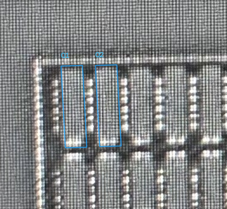

Q1/Q2主体和端部表达基本合理；蓝色范围基本接近实际，无明显方向偏差；显示范围内没有遗漏扩宽或引出。此页不再要求重复核查。

采用当前两条蓝色主体几何，不再人为添加端部扩展。端部表达通过不等于已获得逐像素精确边界，也不新增CT归属或连接结论。
横向P-H01批准保持。后续从已审横/竖向四个对象接续到全幅POLY候选，全幅尚未完成，POLY skill尚未封装。
原始对照页（保留验收前状态） · 验收记录和范围